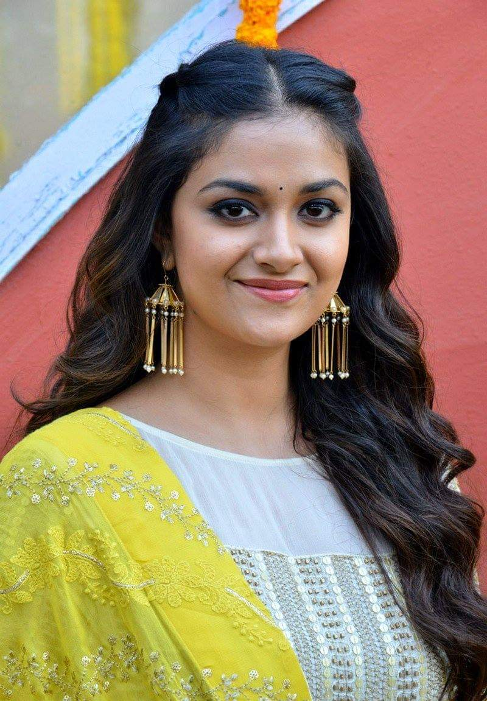
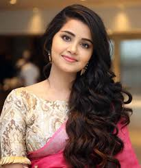
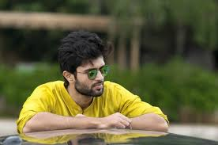
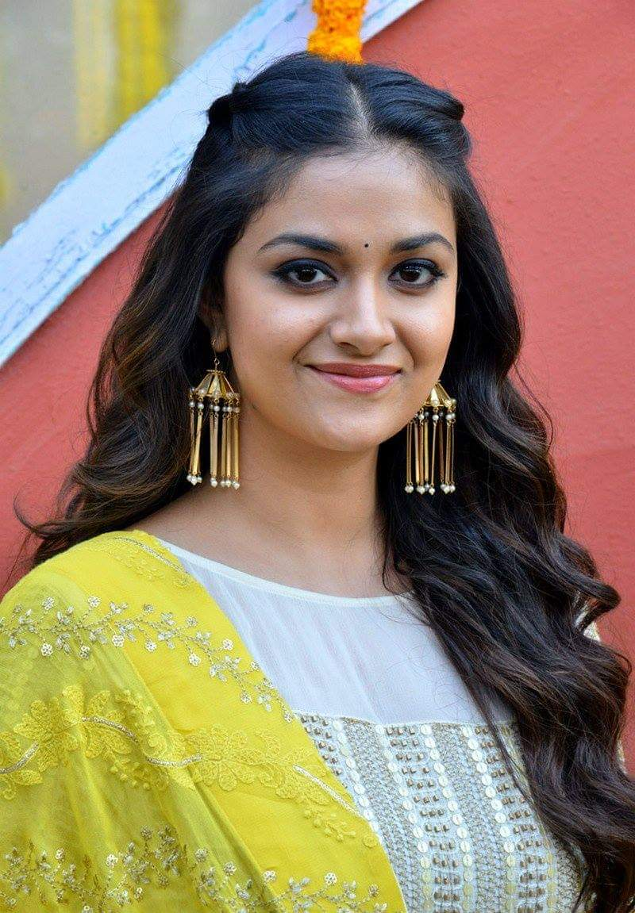
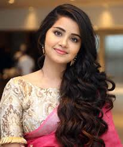
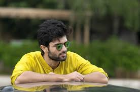

Allu Arjun (born 8 April 1982) is an Indian actor who works in Telugu cinema.
One of the highest-paid actors in Indian cinema,[1] Allu Arjun has been featured in Forbes India's Celebrity 100 list since 2014.[2]
He is a recipient of several awards including a National Film Award, six Filmfare Awards, and three Nandi Awards.[3]
He is considered to be one of the finest dancers in Indian cinema.[4]
He is popularly referred to as "Stylish Star" and "Icon Star".[5]
Allu Arjun made his debut with Gangotri in 2003. He rose to prominence starring in Sukumar's cult classic Arya (2004) for which he earned a Nandi Special Jury Award.[6]
He consolidated his reputation with the action films Bunny (2005) and Desamuduru (2007).
In 2008, he starred in the romantic drama Parugu for which he won his first Filmfare Award for Best Actor – Telugu.[7]
Allu Arjun went on to star in notable films such as Arya 2 (2009), Vedam (2010), Julayi (2012),
Race Gurram (2014), S/O Satyamurthy (2015), Rudhramadevi (2015), Sarrainodu (2016), DJ: Duvvada Jagannadham (2017), Ala Vaikunthapurramuloo (2020) and
Pushpa: The Rise (2021). His performances as a lower-class cable operator in Vedam and as a carefree street smart man in Race Gurram won him two Filmfare Awards for Best Actor – Telugu.
He also won the Filmfare Award for Best Supporting Actor for his portrayal of prince Gona Ganna Reddy in Rudhramadevi.
He received high acclaim for his performance in Pushpa: The Rise, which emerged as the highest-grossing Indian film in 2021 and ranks among the highest-grossing Telugu films of all time.
The film also earned him his first National Film Award for Best Actor, and fourth Filmfare Award for Best Actor – Telugu.
Allu Arjun endorses a wide number of brands and products, and is a celebrity brand ambassador for the Pro Kabaddi League[8] and for the streaming service Aha.[9][10]
In 2021, Allu Arjun became the brand ambassador of Sri Chaitanya Educational Institutions.[11]
Allu Arjun was born on 8 April 1982[a] in a Telugu family to film producer Allu Aravind and Nirmala in Madras (present-day Chennai).
His paternal grandfather was the noted film comedian Allu Ramalingaiah who appeared in over 1000 films.[15][16]
Their native place is Palakollu of West Godavari district, Andhra Pradesh.[17] Allu Arjun grew up in Chennai before their family moved to Hyderabad in his 20s.[18][19]
He is the second of three children. His elder brother Venkatesh is a businessman while his younger brother Sirish is also an actor.
His paternal aunt is Surekha Konidela, the wife of actor Chiranjeevi.[20] He is the first cousin of actor Ram Charan.[21]
 Home
Home
Keerthy Suresh (born 17 October 1992) is an Indian actress who appears predominantly in Tamil, Telugu and Malayalam films. She is a recipient of various accolades including one National Film Award, four SIIMA Awards and a Filmfare Award South. Keerthy was placed in Forbes India's 30 Under 30 list of 2021.[1] Keerthy Suresh is the daughter of film producer G. Suresh Kumar and actress Menaka G. Suresh.[2] She began her career as a child actress in the early 2000s and returned to films after studying fashion design. She had her first lead role in the 2013 Malayalam film Geethaanjali, for which she won SIIMA Award for Best Female Debut – Malayalam.[3] After winning SIIMA Award for Best Female Debut – Tamil for Idhu Enna Maayam (2015), Keerthy went on to star in successful south indian films such as Ring Master (2014), Nenu Sailaja (2016), Rajinimurugan (2016), Remo (2016), Bairavaa (2017), Nenu Local (2017), Sarkar (2018), Thaanaa Serndha Koottam (2018). Keerthy's portrayal of Savitri in the Telugu-language Mahanati (2018) earned her the Filmfare Award and National Film Award for Best Actress. Keerthy established herself as a leading actress with her performances in Penguin (2020), Miss India (2021), Rang De (2021), Good Luck Sakhi (2022), Sarkaru Vaari Paata (2022) and Dasara (2023). Keerthy Suresh was born on 17 October 1992 in Madras, Tamil Nadu.[4][5] Her father G. Suresh Kumar is a filmmaker of Malayali[6] origin while her mother Menaka is an actress of Tamil origin. She has an elder sister Revathy Suresh. Until class four, Keerthy did her schooling in Chennai, Tamil Nadu.[7] She then studied in Kendriya Vidyalaya, Pattom, Kerala before coming back to Chennai to join the Pearl Academy, where she completed her degree in fashion design.[8] She also spent time on an exchange program in Scotland for four months, before completing a two-month internship in London.[citation needed] Despite making a career in acting, she has stated that she was also "seriously considering a career in designing".[9] Keerthy also knows to play the violin.[10]
Home
Anupama was born on 18 February 1996[1] to Malayali family in Irinjalakuda, Thrissur district, Kerala to Parameswaran Erekkath and Sunitha Parameswaran. She has a younger brother Akshay.[1][4] She attended CMS College Kottayam, Kerala where she majored in Communicative English until she discontinued college to pursue acting. Anupama debuted with Premam alongside Nivin Pauly, which was a commercial success.[6] She then had a cameo in James & Alice, a Malayalam film. Later she forayed into Telugu films with a handful of projects including A Aa, where she played a lead role along with Nithiin and Samantha Ruth Prabhu.[7] She then was in the Telugu remake of Premam.[8][9] Her next film was Kodi, her debut in Tamil cinema, in which she had the lead role opposite Dhanush.[10] She also acted alongside Sharwanand in the Telugu film Shatamanam Bhavati which was released in January 2017,[11] followed by Jomonte Suvisheshangal in Malayalam alongside Dulquer Salmaan released in the same month. After Vunnadhi Okate Zindagi opposite Ram Pothineni, she worked on Merlapaka Gandhi's Krishnarjuna Yudham opposite Nani and A. Karunakaran's Tej I Love You opposite Sai Dharam Tej.[12] She was again paired alongside Ram Pothineni in Hello Guru Prema Kosame. In 2019, Anupama debuted with Natasaarvabhowma in Kannada cinema alongside Puneeth Rajkumar.[13] She then appeared in Telugu film Rakshasudu.[14] In 2021, she was paired opposite Atharvaa in Tamil film Thalli Pogathey.[15] In 2022, she was paired opposite debutant Ashish in Telugu film Rowdy Boys.[16] Her second Telugu film in the same year was in Karthikeya 2, which served as a sequel to Karthikeya (2014).[17] In 2024, Anupama acted in Tillu Square, the sequel to Tillu, starring alongside Siddhu Jonnalagadda, released on 29 March 2024.
Home
Deverakonda Vijay Sai (born 9 May 1989), professionally known as Vijay Deverakonda,[1] is an Indian actor and film producer who works predominantly in Telugu films.[2][3] One of the highest-paid actors of Telugu cinema, he has featured in Forbes India's Celebrity 100 list since 2018 and has received several accolades, including a Filmfare Award, a Nandi Award, and two SIIMA Award.[4 Deverakonda made his debut with Nuvvila (2011) and received praise for his role in the coming-of-age drama Yevade Subramanyam (2015). He rose to prominence as a leading film actor by starring in the blockbusters Pelli Choopulu (2016) and Arjun Reddy (2017), winning the Filmfare Award for Best Actor Telugu for his performance as a volatile surgeon in the latter. He further established himself with commercially successful films such as Mahanati (2018), Geetha Govindam (2018), and Taxiwaala (2018).[5][6] This success was followed by a series of poorly received films such as the critically panned big-budget action film Liger (2022). In 2019, Deverakonda launched his own production house King of the Hill Entertainment, which produced Meeku Maathrame Cheptha (2019) and Pushpaka Vimanam (2021).[7][8] Beyond his film career, Deverakonda has designed his own fashion brand Rowdy Wear, which launched on Myntra in 2020,[9] and is the co-owner of the volleyball team Hyderabad Black Hawks.[10] Deverakonda is also a celebrity endorser for numerous products and supports various humanitarian causes.
Home